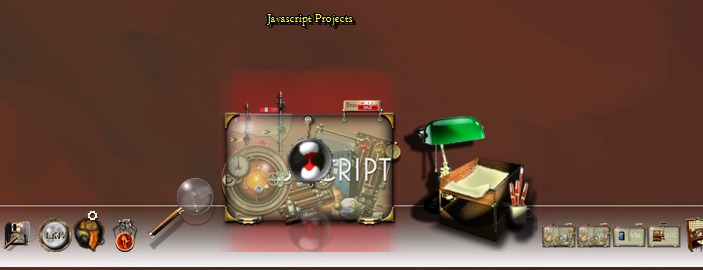
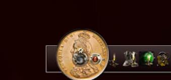
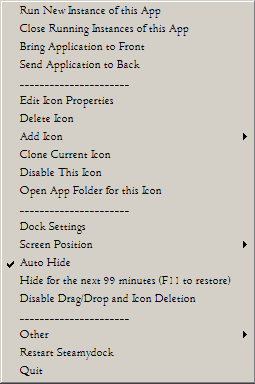

Dock Operation
When the dock is run for the first time, the dock will display a series
of default icons that relate to typical applications that exist on your
system. The dock will appear at the top of the screen.
Fig 03a. The dock as it appears at the top of the screen.
The default icons consist of the following links to applications:
| Programs And Features | Will open the Windows utility used to install or uninstall a program. |
| Log Off | Log the current user ie. you - off the machine. |
| Shutdown | Shutdown this PC after a confirmation |
| Sleep | Send this PC into sleep mode after a confirmation |
| Network | Opens the Windows Utility that displays the workgroup network |
| Control Panel | Opens the Windows Control Panel |
| Printers | Shows the available Windows Printers |
| Device Manager | Opens the Windows device Manager utility |
| CMD Console | Opens the Windows console for typing commands directly |
| Task Manager | Runs the Task Manager |
| Recycle Bin | Opens the Windows Recycle Bin |
| Administration Tools | Runs the Windows Computer Management Utility |
| Program files (x86) | Opens Explorer in the 32bit program files folder |
| Program files | Opens Explorer in the 64bit program files folder |
| Downloads folder | Opens Explorer in the downloads folder |
| Search | Opens the default Windows Search Page |
| My Computer | Opens Explorer in the "My Computer" folder |
| Notepad | Runs the notepad program |
| My Documents | Opens Explorer in the "My Documents" folder |
| My Pictures | Opens Explorer in the "My Pictures" folder |
| My Videos | Opens Explorer in the "My Videos" folder |
| WordPad | Runs the Wordpad program |
| Icon Settings Tool | Starts up SteamyDock's Icon Settings Utility |
| Dock Settings Tool | Starts up SteamyDock's Dock Settings Utility |
Basic Functionality
When you move your cursor to the dock it will animate three icons, causing each to grow. The name assigned to the icon will appear above the central icon. If you click on any icon then it will run the application associated with it. You can also right click on the dock to access other options. If you press F11 the dock will disappear, press it again and it will re-appear. That is the basic functionality of the dock explained.Icons
When you place your icon over the dock, it will animate the highlighted icon and the icons next to it. There will eventually be four types of animation but at the moment there is only one named "bump". A click on the largest icon will run the program or utility associated with the icon. An animation effect will occur to show the icon has been activated.
Fig 04a. The dock animation in operation
Adding an application to the dock is achieved in two manners, first, by dragging and dropping its icon to the dock, secondly by right clicking and selecting "add an icon".

Fig 04b. The Running Application Indicators as shown in SteamyDock appearing above any icons with running applications.
If the application associated with the icon is already running then it will have a cog sitting above it. If you click on that icon then it will not open a new instance of the program but instead will minimise or maximise the running window as required. In this respect, it operates in a similar fashion to the windows taskbar. The cog will appear above running binaries and Explorer Windows. There may be a very short delay for the cog to appear above recently initiated Explorer windows.

Fig 04c. The Red X Invalid Application Indicators as shown in SteamyDock appearing above any icons with missing or invalid applications.
If the application associated with the icon is found to be missing or is invalid then it will have a red 'x' sitting above it. If you click on that icon then it will not open a new instance of the intended program as it cannot be found, instead it will pop up a message box alerting you to the fault.
Drag and drop TO the dock
Drag and drop is enabled by default, you can enable or disable it at any time by a right click on the dock to select the option to enable.
When you drag an application icon to the dock you will see a rotating hourglass when you hover your cursor over the dock. This tells you where the new application icon will be placed. As you move the cursor along the dock the hourglass will move with your cursor. When you drop the icon from the Windows desktop onto the dock then Steamydock will extract an icon from the binary and create a PNG in order to place it within the dock at your chosen location.

Fig 04d. The Rotating Hourglass indicating drag in operation.
In the Dock Settings Behaviour Tab there is an option "Icon Origin", unclick this and SteamyDock will attempt to identify it and incorporate the new icon into the dock, choosing a suitable icon from the icon collections available. Having done this it will then pop up the Icon Settings tool so that you can see the properties of the new icon (this can be disabled in Dock Settings).
Note: If Steamydock is running as admin then drag and drop to the dock will not function. This is Microsoft's way of ensuring encapsulation of processes with privileges, so you cannot pass a message to a program with admin rights in order to make it do something naughty. If you ever find yourself unable to drag and drop to the dock just close the dock and restart it without administrator rights (right click - properties - advanced - administrative rights OFF. Also, the same in the compatibility settings.
The sovereign image is just a reminder to you that the dock has admin rights. The dock is best run without admin rights.

Fig 04e. The Royal Sovereign Administrator Mode.
Drag FROM the dock
If you drag an icon from the dock then that will be interpreted as an icon deletion to match Rocketdock functionality. In this case though, a message will always pop up asking you to confirm whether the icon deletion is intentional.
Drag and drop WITHIN the dock
If you click and drag an icon from one position of the dock to another then the dock will interpret that as an icon move, depositing the icon to the new location.
Menus & Other Options

Fig 05. SteamyDock showing right click menu options.
A right-click on any icon in the icon pane will give you more
options, the main menu is disclosed when right-clicking
anywhere on the dock. The menu options displayed will differ
according to whether the application associated with this icon is
already running. If it is running then the following additional options
will be displayed.

Fig 06. SteamyDock right click menu options when an application is already running.
If the application is already running then you now have the choice of initiating another instance of the app, ie. you can run it again in a new window. Some applications specifically forbid this or have an option to allow it. Running an application this way will not override an application specific setting.
Close Running Instance of this App
If the application is already running then it will have a cog sitting above it. If so, you then have the choice of killing the application from the dock, this is very useful if the application has hung or is unresponsive. Note that it will kill all instances of the program you have chosen to kill. Eg. if you have three instances of the program running it will end all three. If you are closing an application such as Firefox or Chrome please note that it will have multiple processes to kill and you will be prompted to kill each one.
If you use Steamydock to kill an unresponsive full screen game that has had a fatal graphics error then do be aware that the pop-up msgbox confirming closure might be underneath the unresponsive window. For tasks such as this it might be better to fire up taskmgr.
Bring Application to Front
If the application is already running then you have the choice of bringing the window to the front, ie. placing it on top of all other windows.
Send Application to Back
If the application is already running then you have the choice of sending the window to the back, ie. placing it underneath all other windows. This will place the chosen window right to the very back, ie. even underneath background Windows such as widget engines that traditionally sit right underneath all other windows. The effect may surprise you at first but a click on the app itself is enough to bring it forward again.
The above four options are not available for Explorer windows.

Fig 07. SteamyDock right click menu options for an icon when no associated application is running.
Run this App
If the dock icon does not display a cog above it, then it is not running or has not been initiated by the dock. When this is the case, only two options will be offered, the first being to 'run the app'. This option is the same as a click on the icon itself but without any animation. On a system that is running slowly due to a lot of active applications this may be the quicker option.
Run this App As Administrator
The second option will be offered to 'run the app as administrator'. This option allows you to temporarily run this application with elevated privileges. Some apps require elevated access in order to operate. For example, the VB6 or other similar IDEs will require elevated access in order to recompile binaries that need to be directly placed into the program files folders, for operation there. Without elevated privileges the compilation will fail because it does not have the admin access it requires to write directly to the program files folder. There are similar scenarios where admin access is required. When you want admin access as a one-off, use this option.
Run New Instance of this App As Administrator
If the application is already running then you now have the choice of initiating another instance of the app, ie. you can run it again in a new window, this time with elevated privileges.
Run Elevated
This option is just for information and is really just the equivalent of the "Run this App" option but is shown only when the icon has already been designated to run in an elevated fashion. This is configured in the icon settings utility. See below. Any icon can have the "Run Elevated" switch set so that the specific app. always runs elevated.
Note: Some Apps do not like being run elevated, some apps will not allow themselves to be run elevated (eg. Visual Studio Code) , and Windows itself does not even like the attempt to run certain apps with elevated privileges. Try to avoid using this facility unless absolutely necessary. Windows will not allow explorer windows to run elevated so the elevated option will not appear for these.
Edit Icon Properties
When using the dock, if you hover over an icon and select the right-click menu, you will see "Edit Icon Properties". Choosing that will open the icon settings utility and display the current icon and its properties
The Icon settings screen is a separate program which you use to configure the individual icons, which application they represent and the text that will be displayed above each icon in the dock. The Icon settings screen is modelled on that provided by Rocketdock with some detail changes and enhancements.

Fig 08. SteamyDock Icon Settings Utility.
This utility has its own help so we won't go into it in detail here. Suffice to say that you can select icon sets, add or delete items in the dock and modify the dock icons and their target applications. To view the help for this tool, when it is open, select the tool's help page using the right click menu in the same manner as when you selected this help page from the dock.
Note: You can also add icons to the dock by using this utility and modifying the icon map (see the help for the icon settings tool).

Fig 09. SteamyDock Icon Settings Icon Map.
Deleting An Icon
This option is only enabled when the dock is unlocked, otherwise it is greyed out. This prevents accidental deletion of icons from the dock. You can delete an icon at any time but use it sparingly as it is not quite as easy to get your icon back again.
Adding an icon.When you select this option it will present you with a list of target types that can be added to your icon position. Choose the one that seems most appropriate to your requirement.

Fig 09. Adding an icon to SteamyDock.
When you clone the particular icon it will create a virtual duplicate immediately next door. Useful for setting up an icon with a very similar function.
Clone this Icon.
When you clone the particular icon it will create a virtual duplicate immediately next door. Useful for setting up an icon with a very similar function.
Disable this Icon.
When you disable the particular icon, it will no longer respond to a click. It will pop up a message box and inform you that the icon is disabled. Any disabled icon will appear in reduced opacity. If an icon is disabled already then this option will state "Re-enable this Icon".
Open App Folder in Windows Explorer.
When you select this option, a file explorer window will open using the folder location where your application is situated. A useful function to find an application quickly.